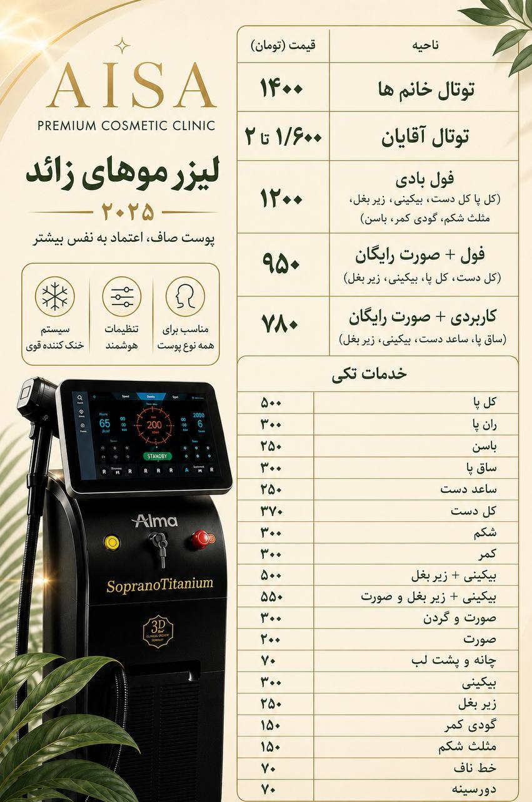

اگر خستهاید از اینکه هر هفته وقتتان صرف اپیلاسیون یا وکس میشود و چند روز بعد دوباره همان داستان تکرار میشود، وقتشه یک بار برای همیشه این چرخه رو متوقف کنید. لیزر موهای زائد در آیسا با دستگاه Soprano Titanium 2025 انجام میشود؛ یکی از پیشرفتهترین دستگاههای موجود که برای انواع پوست و مو طراحی شده.
مراحل انجام لیزر موهای زائد در آیسا
- مشاوره و بررسی پوست: در اولین جلسه، نوع پوست و مو، و ناحیه مورد نظرتان بررسی میشود تا برنامه درمانی دقیق و شخصیسازیشده طراحی شود.
- تنظیم دستگاه: پارامترهای Soprano Titanium (توان، فرکانس، سیستم خنککننده) متناسب با شرایط پوست شما تنظیم میشود.
- انجام جلسه: جلسه با سیستم خنککننده پیوسته انجام میشود تا تجربهای راحت و با حداقل ناراحتی داشته باشید.
- مراقبت بعد از جلسه: توصیههای لازم برای مراقبت پوست ارائه میشود و جلسه بعدی بر اساس چرخه رشد موی شما برنامهریزی میگردد.
چرا لیزر موهای زائد را در آیسا انجام دهید؟
- دستگاه Soprano Titanium 2025 با قابلیت تنظیم برای انواع پوست، حتی پوستهای تیرهتر
- اپراتور آموزشدیده و مسلط به تنظیم دقیق پارامترها
- محیطی بهداشتی، آرام و خصوصی در تهرانپارس
- بستههای متنوع، از تکناحیه تا فولبادی، متناسب با نیاز و بودجه شما
برای اینکه از همان ابتدا دید روشنی نسبت به هزینهها داشته باشید، لیست کامل قیمت نواحی مختلف و پکیجهای ترکیبی رو همینجا در اختیارتان میگذاریم؛ در جلسه مشاوره هم میتوانیم بر اساس نیاز دقیق شما، مقرونبهصرفهترین بسته رو پیشنهاد بدیم.

سؤالاتی که معمولاً قبل از رزرو میپرسند
آیا لیزر برای همه نواحی بدن مناسب است؟
بله، از صورت و زیر بغل گرفته تا دست و پا و بدن، هر ناحیه با تنظیمات مخصوص به خودش انجام میشود.
فاصله بین جلسات چقدر است؟
بسته به ناحیه و چرخه رشد مو، معمولاً چند هفته فاصله بین جلسات در نظر گرفته میشود؛ زمانبندی دقیق در مشاوره اول مشخص میشود.
برای دریافت برنامه درمانی و بسته پیشنهادی متناسب با نیازتان، یک مشاوره رایگان رزرو کنید.
رزرو مشاوره رایگان